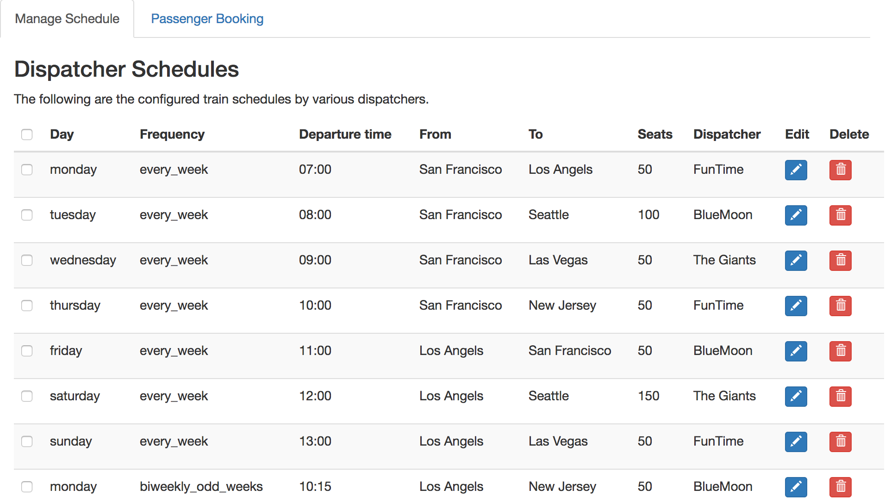

README
Full stack Schedule and booking system.
Pre-requisites
-
Ensure postgres sql is installed locally
-
Ensure ruby is installed
Installation
gem install bundle
bundle install
export RAILS_ENV=production
rails db:create
rails db:migrate
rails db:seed
rails s
Once installation is done, visit localhost:3000/
Testing
export RAILS_ENV=test
rails db:create
rails db:migrate
rails db:seed
rails test
Key Features Implemented
-
Schedule controller has two API endpoints
-
/schedule/ : provides information of all available schedules and their frequencies. This is used by a dispatch manager to view weekly,biweekly,monthly schedules.
-
/schedule/trains : Search for trains between two cities on the week following a given date. This can be used for booking.
-
-
UI using bootstrap, handlebar for templating
-
Schedule management page
-
Passenger booking page
-
-
Database schema design and data seeding
-
Request validation using JSON schema
-
Logging
-
Stasd
Anatomy of the application
The following are the links to key files that constitute the application.
Models
-
City: Names of the city the service is offered.
-
Train: Represents a train line from a city to a city.
-
Schedule: A configuration of a recurring service.
-
TrainSchedule: Connects a train with a recurring schedule.
-
Dispatcher: A dispatcher is a company that runs a train service.
Controllers
-
SchedulesController: Two key API methods implemented.
-
HomepageController: Displays the UI rendering a erb file.
Services
-
ScheduleService: Build of the business logic for driving the the APIs
Schemas
-
ScheduleSchema: JSON schema that validates APIs
Images
The following are screenshorts of the application which has two views. A view to watch recurring schedules and a view to look up and book trains in those schedules.
